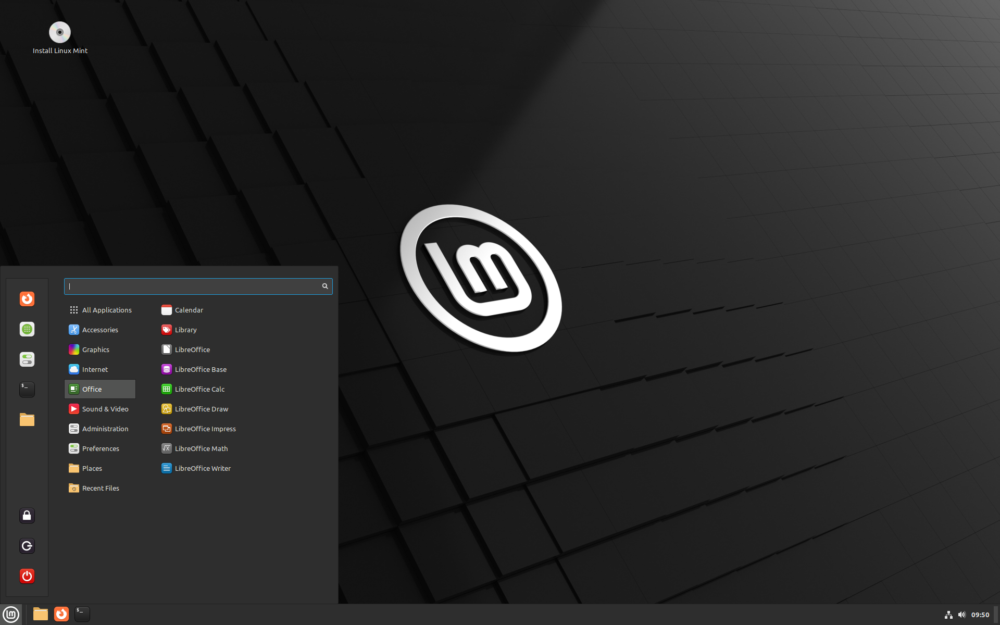
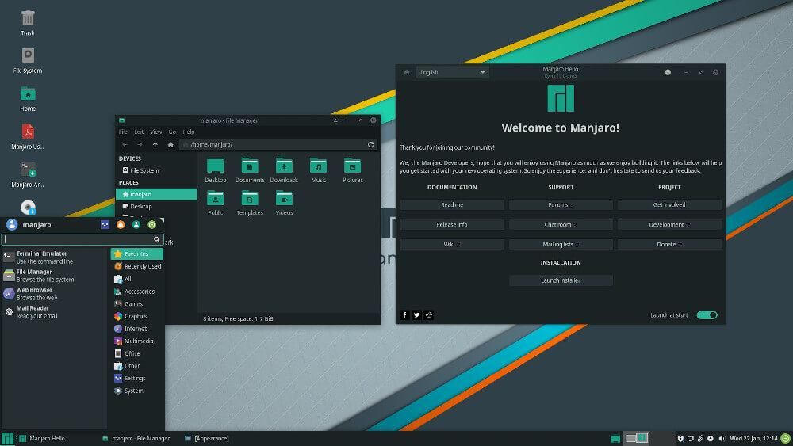
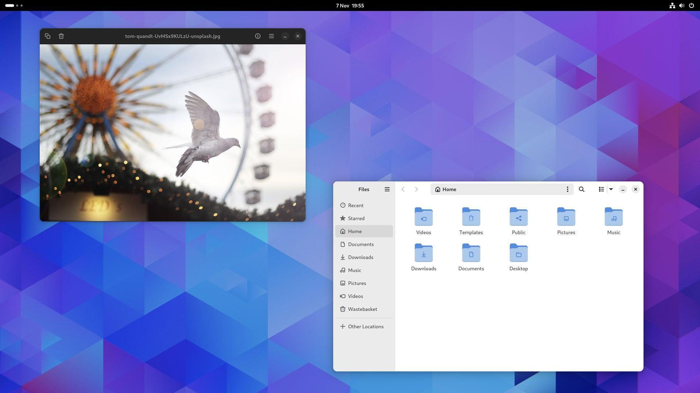
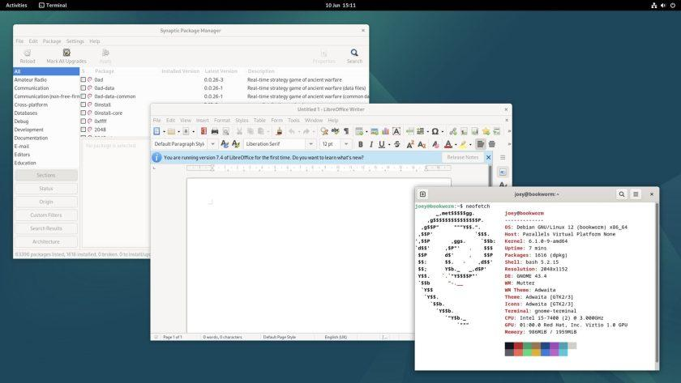
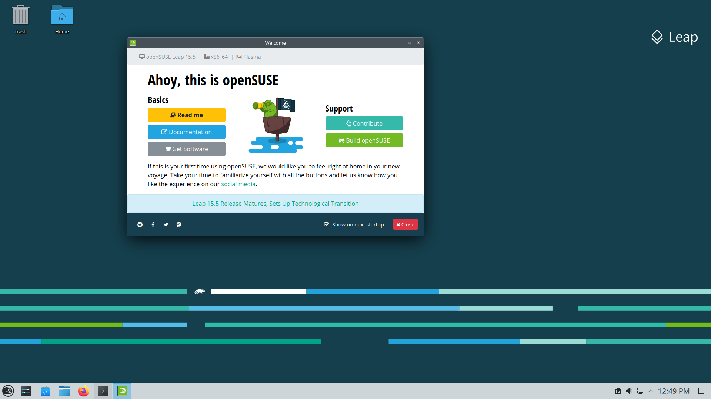

Čo je to “distribúcia”?
Linux má množstvo rôznych verzií, ktoré vyhovujú akémukoľvek typu používateľa. Od nových používateľov až po náročných používateľov nájdete „príchuť“ Linuxu, ktorá bude zodpovedať vašim potrebám. Tieto verzie sa nazývajú distribúcie. Takmer každá distribúcia Linuxu sa dá stiahnuť zadarmo, napáliť na disk (alebo USB kľúč) a nainštalovať.
Každá distribúcia má iný pohľad na pracovnú plochu. Niektoré sa rozhodnú pre veľmi moderné používateľské rozhrania, zatiaľ čo iné zostanú pri tradičnejšom prostredí pracovnej plochy.
Populárne distribúcie Linuxu
Linux Mint sa stal jednou z najlepších distribúcií pre začínajúcich používateľov Linuxu vďaka jednoduchému použitiu. Je to operačný systém založený na Ubuntu, ktorý je vhodný na každodenné používanie a hranie hier. Vďaka pocitu Mintu ako Windows sa používatelia, ktorí prechádzajú z Windowsu, cítia ako doma a je jedným z hlavných predajných bodov distribúcie.
Manjaro sa špeciálne zameriava na dostupnosť a užívateľskú prívetivosť. Vyznačuje sa rolovacím uvoľňovacím modelom. Jeho jednoduchosť, stabilita a výkon z neho robí vhodnú alternatívu OS k MacOS a Windows. Ponúka viacero desktopových prostredí.
Fedora, postavená a udržiavaná projektom Fedora (a sponzorovaná Red Hat), celosvetovou komunitou dobrovoľníkov a vývojárov, je už roky jednou z najpoužívanejších distribúcií. Snáď najvýraznejšou charakteristikou Fedory je, že je vždy na čele integrácie nových verzií balíkov a technológií do distribúcie.
Debian je rozšírenou alternatívou pre používateľov, ktorí chcú maximálnu odolnosť a dôveryhodnosť. Funguje od roku 1993 a stále pravidelne uvádza na trh najnovšie verzie. Počas životnosti každého balíka poskytuje racionálnu predvolenú konfiguráciu a časté aktualizácie zabezpečenia. Okrem toho Debian slúži ako framework pre mnohé známe distribúcie Linuxu, najmä Ubuntu, Knoppix, PureOS a Tails.
OpenSUSE Leap je zameraná na profesionálne použitie. Je založená na SUSE Linux Enterprise Server a bola vytvorená s cieľom poskytnúť robustný, dôveryhodný a bezpečný operačný systém. OpenSUSE Leap tiež prichádza s množstvom nástrojov, ktoré sú navrhnuté tak, aby zefektívnili vašu prácu. Má ďalšie funkcie, ktoré z neho robia fantastickú možnosť pre podniky. V prvom rade ide o veľmi stabilnú distribúciu.
